#Cherry tress data:
data(trees)
# help(trees)
n <- nrow(trees)
summary(trees) Girth Height Volume
Min. : 8.30 Min. :63 Min. :10.20
1st Qu.:11.05 1st Qu.:72 1st Qu.:19.40
Median :12.90 Median :76 Median :24.20
Mean :13.25 Mean :76 Mean :30.17
3rd Qu.:15.25 3rd Qu.:80 3rd Qu.:37.30
Max. :20.60 Max. :87 Max. :77.00 colnames(trees)[1] <- "Diameter"
hist(trees$Volume)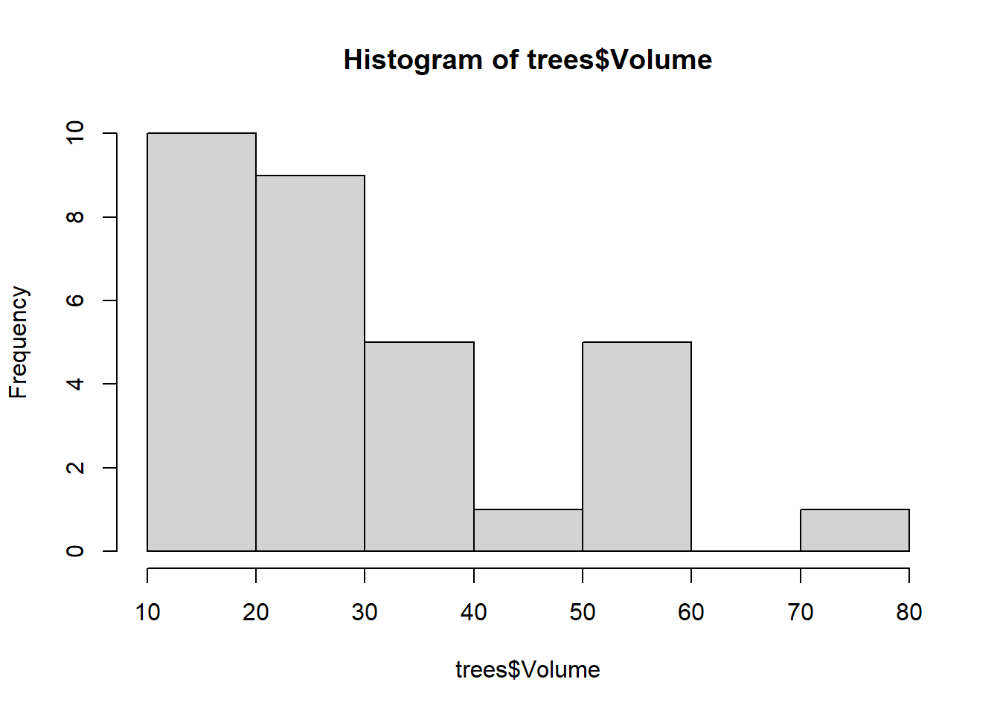
hist(trees$Diameter)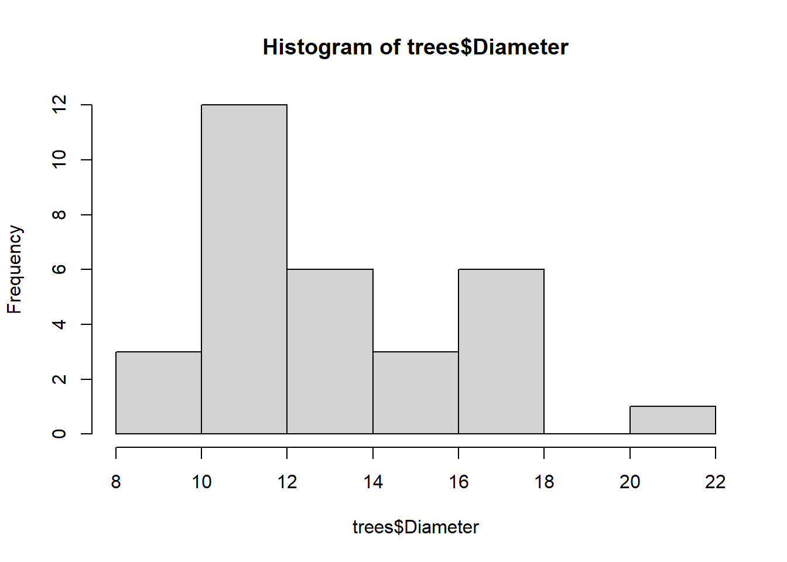
hist(trees$Height)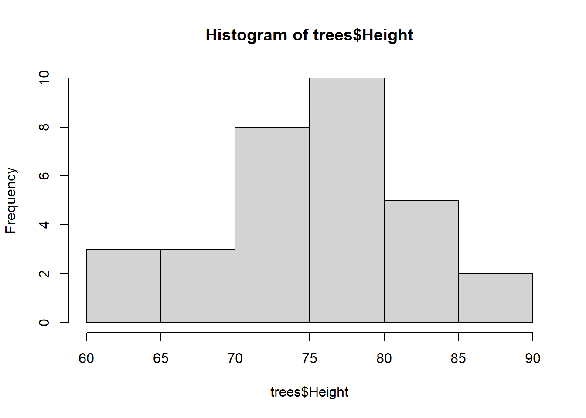
plot(trees, pch=19)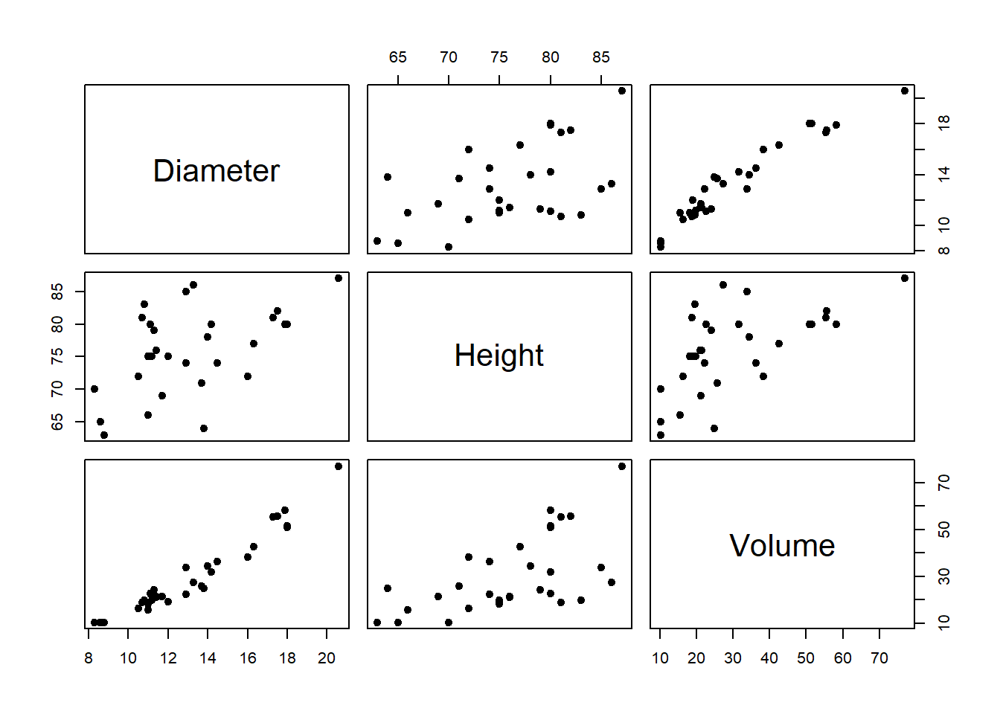
cor(trees[,1:3]) Diameter Height Volume
Diameter 1.0000000 0.5192801 0.9671194
Height 0.5192801 1.0000000 0.5982497
Volume 0.9671194 0.5982497 1.0000000#################################
#### Regression line:
# We can consider several lines passing through the scatterplot:
plot(trees$Diameter, trees$Volume, pch=19,
ylab="Volume", xlab = "Diameter")
abline(a=-40, b=5, col=1)
abline(h=mean(trees$Volume), col=2)
abline(a=10, b=2, col=3)
abline(a=-60, b=7, col=4)
abline(a=-100, b=9, col=6)
# Let's estimate the regression line,
# that is the BEST line passing through the data:
lm1 <- lm(Volume ~ Diameter, data=trees)
summ1 <- summary(lm1);summ1
Call:
lm(formula = Volume ~ Diameter, data = trees)
Residuals:
Min 1Q Median 3Q Max
-8.065 -3.107 0.152 3.495 9.587
Coefficients:
Estimate Std. Error t value Pr(>|t|)
(Intercept) -36.9435 3.3651 -10.98 7.62e-12 ***
Diameter 5.0659 0.2474 20.48 < 2e-16 ***
---
Signif. codes: 0 '***' 0.001 '**' 0.01 '*' 0.05 '.' 0.1 ' ' 1
Residual standard error: 4.252 on 29 degrees of freedom
Multiple R-squared: 0.9353, Adjusted R-squared: 0.9331
F-statistic: 419.4 on 1 and 29 DF, p-value: < 2.2e-16abline(lm1, col=2,lwd=2)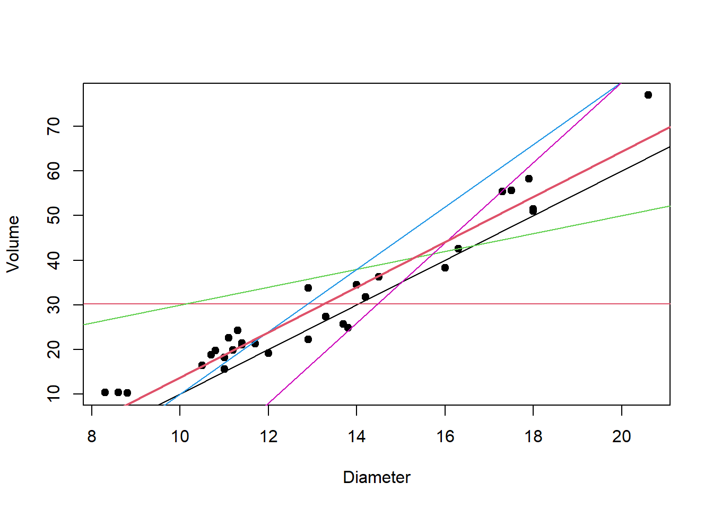
# Let's look at the regression line:
plot(trees$Diameter, trees$Volume, pch=19,
ylab="Volume", xlab = "Diameter")
abline(lm1, col=2)
# Compute the predicted values of the model:
coef(lm1)[1] + coef(lm1)[2]*trees$Diameter [1] 5.103149 6.622906 7.636077 16.248033 17.261205 17.767790 18.780962
[8] 18.780962 19.287547 19.794133 20.300718 20.807304 20.807304 22.327061
[15] 23.846818 28.406089 28.406089 30.432431 32.458774 32.965360 33.978531
[22] 34.991702 36.511459 44.110244 45.630001 50.695857 51.709028 53.735371
[29] 54.241956 54.241956 67.413183y_prev <- predict(lm1)
y_prev == coef(lm1)[1] + coef(lm1)[2]*trees$Diameter 1 2 3 4 5 6 7 8 9 10 11 12 13 14 15 16
TRUE TRUE TRUE TRUE TRUE TRUE TRUE TRUE TRUE TRUE TRUE TRUE TRUE TRUE TRUE TRUE
17 18 19 20 21 22 23 24 25 26 27 28 29 30 31
TRUE TRUE TRUE TRUE TRUE TRUE TRUE TRUE TRUE TRUE TRUE TRUE TRUE TRUE TRUE #### Residuals:
# Once we fitted the model, we can compute the residuals
e <- trees$Volume - y_prev
# Graphical representation of the residuals:
segments(x0=trees$Diameter, x1=trees$Diameter,
y0=trees$Volume, y1=y_prev)
# Estimate of sigma^2
SSres <- sum(e^2)
sigma2_hat <- SSres/(n-2)
sqrt(sigma2_hat)[1] 4.251988SStot <- var(trees$Volume)*(n-1)
SSreg <- sum((y_prev - mean(trees$Volume))^2)
SSreg # spiegata[1] 7581.781SSres # residua[1] 524.3025SStot # totale[1] 8106.084# Deviance decomposition:
round(SStot, 8) == round(SSres + SSreg, 8) [1] TRUE# R^2:
R2 <- SSreg/SStot; R2[1] 0.9353199(cor(trees$Diameter, trees$Volume))^2[1] 0.9353199# Design matrix:
X <- cbind(1, trees$Diameter); X [,1] [,2]
[1,] 1 8.3
[2,] 1 8.6
[3,] 1 8.8
[4,] 1 10.5
[5,] 1 10.7
[6,] 1 10.8
[7,] 1 11.0
[8,] 1 11.0
[9,] 1 11.1
[10,] 1 11.2
[11,] 1 11.3
[12,] 1 11.4
[13,] 1 11.4
[14,] 1 11.7
[15,] 1 12.0
[16,] 1 12.9
[17,] 1 12.9
[18,] 1 13.3
[19,] 1 13.7
[20,] 1 13.8
[21,] 1 14.0
[22,] 1 14.2
[23,] 1 14.5
[24,] 1 16.0
[25,] 1 16.3
[26,] 1 17.3
[27,] 1 17.5
[28,] 1 17.9
[29,] 1 18.0
[30,] 1 18.0
[31,] 1 20.6solve((t(X)%*%X)) [,1] [,2]
[1,] 0.62635938 -0.044843294
[2,] -0.04484329 0.003384812# The summary contains several information:
names(summ1) [1] "call" "terms" "residuals" "coefficients"
[5] "aliased" "sigma" "df" "r.squared"
[9] "adj.r.squared" "fstatistic" "cov.unscaled" summ1$cov.unscaled (Intercept) Diameter
(Intercept) 0.62635938 -0.044843294
Diameter -0.04484329 0.003384812summ1$residuals 1 2 3 4 5 6 7
5.1968508 3.6770939 2.5639226 0.1519667 1.5387954 1.9322098 -3.1809615
8 9 10 11 12 13 14
-0.5809615 3.3124528 0.1058672 3.8992815 0.1926959 0.5926959 -1.0270610
15 16 17 18 19 20 21
-4.7468179 -6.2060887 5.3939113 -3.0324313 -6.7587739 -8.0653595 0.5214692
22 23 24 25 26 27 28
-3.2917021 -0.2114590 -5.8102436 -3.0300006 4.7041430 3.9909717 4.5646292
29 30 31
-2.7419565 -3.2419565 9.5868168 ###################################
#### Regression plane:
# We consider an additional covariate:
lm2 <- lm(Volume ~ Diameter + Height, data=trees)
summ2 <- summary(lm2); summ2
Call:
lm(formula = Volume ~ Diameter + Height, data = trees)
Residuals:
Min 1Q Median 3Q Max
-6.4065 -2.6493 -0.2876 2.2003 8.4847
Coefficients:
Estimate Std. Error t value Pr(>|t|)
(Intercept) -57.9877 8.6382 -6.713 2.75e-07 ***
Diameter 4.7082 0.2643 17.816 < 2e-16 ***
Height 0.3393 0.1302 2.607 0.0145 *
---
Signif. codes: 0 '***' 0.001 '**' 0.01 '*' 0.05 '.' 0.1 ' ' 1
Residual standard error: 3.882 on 28 degrees of freedom
Multiple R-squared: 0.948, Adjusted R-squared: 0.9442
F-statistic: 255 on 2 and 28 DF, p-value: < 2.2e-16library(scatterplot3d)
library(plotly)Caricamento del pacchetto richiesto: ggplot2
Caricamento pacchetto: 'plotly'Il seguente oggetto è mascherato da 'package:ggplot2':
last_plotIl seguente oggetto è mascherato da 'package:stats':
filterIl seguente oggetto è mascherato da 'package:graphics':
layout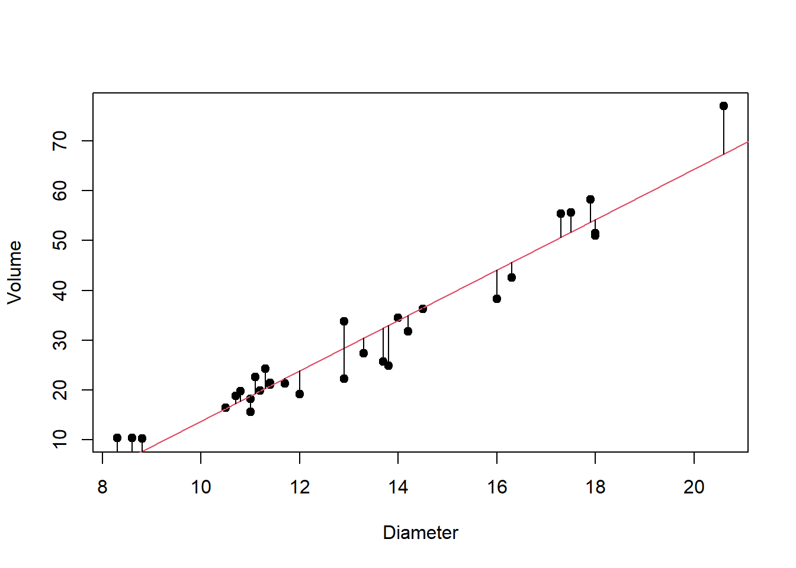
plot3d <- scatterplot3d(trees$Diameter, trees$Height, trees$Volume,
angle=40, scale.y=0.7, pch=16, color ="red",
# angle=40, scale.y=0.7, pch=16, color ="red",
main ="Regression Plane")
plot3d$plane3d(lm2, lty.box = "solid")
plot3d$points3d(trees$Diameter, trees$Height, trees$Volume,col="blue", type="h", pch=16)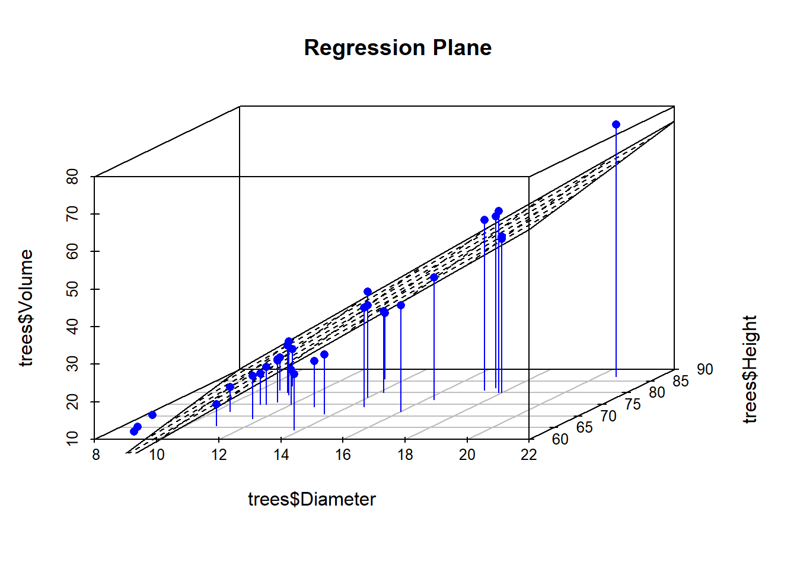
step(lm2)Start: AIC=86.94
Volume ~ Diameter + Height
Df Sum of Sq RSS AIC
<none> 421.9 86.936
- Height 1 102.4 524.3 91.671
- Diameter 1 4783.0 5204.9 162.824
Call:
lm(formula = Volume ~ Diameter + Height, data = trees)
Coefficients:
(Intercept) Diameter Height
-57.9877 4.7082 0.3393 ##################################
#### Dummy:
trees$Height_factor <- factor(ifelse(trees$Height < 76, "Basso", "Alto"))
str(trees)'data.frame': 31 obs. of 4 variables:
$ Diameter : num 8.3 8.6 8.8 10.5 10.7 10.8 11 11 11.1 11.2 ...
$ Height : num 70 65 63 72 81 83 66 75 80 75 ...
$ Volume : num 10.3 10.3 10.2 16.4 18.8 19.7 15.6 18.2 22.6 19.9 ...
$ Height_factor: Factor w/ 2 levels "Alto","Basso": 2 2 2 2 1 1 2 2 1 2 ...lm_dummy <- lm(Volume ~ Diameter + Height_factor, data=trees)
summary(lm_dummy)
Call:
lm(formula = Volume ~ Diameter + Height_factor, data = trees)
Residuals:
Min 1Q Median 3Q Max
-5.6703 -3.0292 -0.6302 2.9008 9.9239
Coefficients:
Estimate Std. Error t value Pr(>|t|)
(Intercept) -31.1856 3.7955 -8.216 6.08e-09 ***
Diameter 4.7700 0.2534 18.827 < 2e-16 ***
Height_factorBasso -4.0699 1.5716 -2.590 0.0151 *
---
Signif. codes: 0 '***' 0.001 '**' 0.01 '*' 0.05 '.' 0.1 ' ' 1
Residual standard error: 3.887 on 28 degrees of freedom
Multiple R-squared: 0.9478, Adjusted R-squared: 0.9441
F-statistic: 254.3 on 2 and 28 DF, p-value: < 2.2e-16plot(Volume ~ Diameter, data=trees, col=Height_factor, pch=20)
abline(a=-31.1856, b=4.7700, col=1)
abline(a=-31.1856-4.0699, b=4.7700, col=2)
legend(8,70, legend=c("Alto","Basso"), col=1:2, lty=1, bty = "n")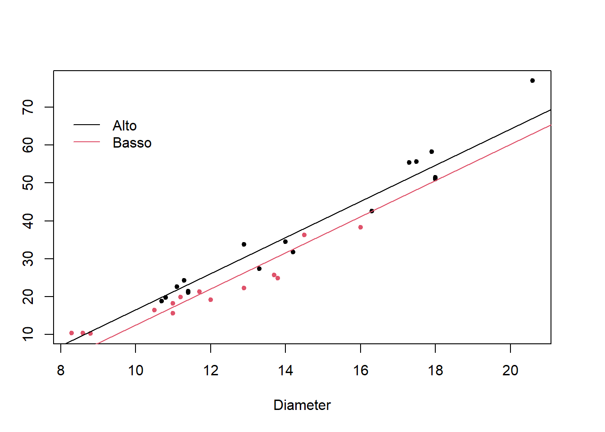
##################################
#### Polynomial regression:
cor(trees[,1:3]) Diameter Height Volume
Diameter 1.0000000 0.5192801 0.9671194
Height 0.5192801 1.0000000 0.5982497
Volume 0.9671194 0.5982497 1.0000000plot(trees$Height, trees$Volume, pch=19,
ylab="Volume", xlab = "Diameter")
lm_poly_1 <- lm(Volume ~ Height, data=trees)
summary(lm_poly_1)
Call:
lm(formula = Volume ~ Height, data = trees)
Residuals:
Min 1Q Median 3Q Max
-21.274 -9.894 -2.894 12.068 29.852
Coefficients:
Estimate Std. Error t value Pr(>|t|)
(Intercept) -87.1236 29.2731 -2.976 0.005835 **
Height 1.5433 0.3839 4.021 0.000378 ***
---
Signif. codes: 0 '***' 0.001 '**' 0.01 '*' 0.05 '.' 0.1 ' ' 1
Residual standard error: 13.4 on 29 degrees of freedom
Multiple R-squared: 0.3579, Adjusted R-squared: 0.3358
F-statistic: 16.16 on 1 and 29 DF, p-value: 0.0003784abline(lm_poly_1, col=2)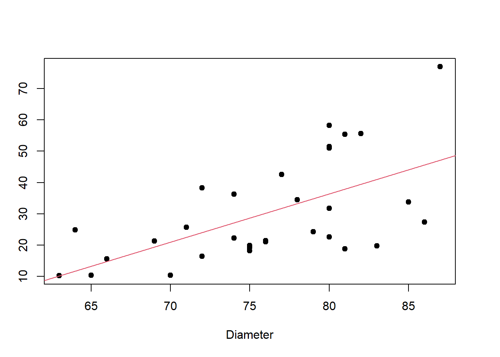
lm_poly_2 <- lm(Volume ~ Height + I(Height^2), data=trees)
summ_poly_2 <- summary(lm_poly_2)
lm_poly_3 <- lm(Volume ~ Height + I(Height^2) + I(Height^3), data=trees)
summ_poly_3 <- summary(lm_poly_3)
quad <- function(h, model){
coef <- coef(model)
x <- coef[1] + coef[2]*h + coef[3]*h^2
return(x)
}
cubic <- function(h, model){
coef <- coef(model)
x <- coef[1] + coef[2]*h + coef[3]*h^2 + coef[4]*h^3
return(x)
}
plot(trees$Height, trees$Volume, pch=19,
ylab="Volume", xlab = "Diameter")
abline(lm_poly_1, col=2)
curve(quad(x, lm_poly_2), add=T, col=3)
curve(cubic(x, lm_poly_3), add=T, col=4)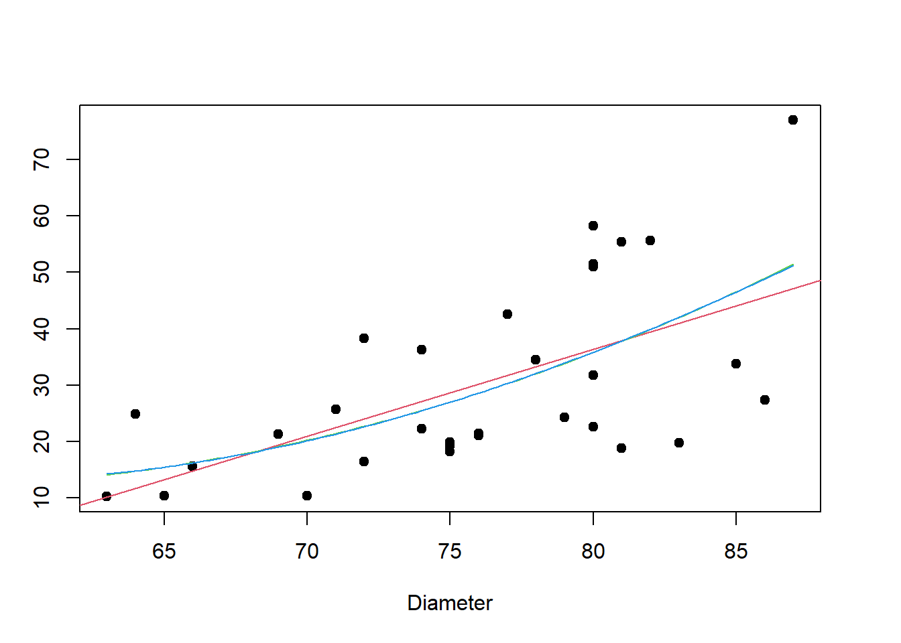
# The anova function compares two models:
# If we accept the hypothesis that the two models
# have the same fit, then we prefer the simpler one
anova(lm_poly_1, lm_poly_3)Analysis of Variance Table
Model 1: Volume ~ Height
Model 2: Volume ~ Height + I(Height^2) + I(Height^3)
Res.Df RSS Df Sum of Sq F Pr(>F)
1 29 5204.9
2 27 5106.1 2 98.815 0.2613 0.772##################################
# Let us suppose that a tree is a cylinder.
# We know that the volume of a cylinder
# is V = pi * (Diameter/2)^2 * Height
# Then log(V) = log(pi/4) + 2log(Diameter) + log(Height)
Y <- log(trees$Volume)
X1 <- log(trees$Diameter)
X2 <- log(trees$Height)
lm_log <- lm(Y ~ X1 + X2)
summary(lm_log)
Call:
lm(formula = Y ~ X1 + X2)
Residuals:
Min 1Q Median 3Q Max
-0.168561 -0.048488 0.002431 0.063637 0.129223
Coefficients:
Estimate Std. Error t value Pr(>|t|)
(Intercept) -6.63162 0.79979 -8.292 5.06e-09 ***
X1 1.98265 0.07501 26.432 < 2e-16 ***
X2 1.11712 0.20444 5.464 7.81e-06 ***
---
Signif. codes: 0 '***' 0.001 '**' 0.01 '*' 0.05 '.' 0.1 ' ' 1
Residual standard error: 0.08139 on 28 degrees of freedom
Multiple R-squared: 0.9777, Adjusted R-squared: 0.9761
F-statistic: 613.2 on 2 and 28 DF, p-value: < 2.2e-16plot3d <- scatterplot3d(X1, X2, Y,
angle=60, scale.y=0.7, pch=16, color ="red",
main ="Regression Plane")
plot3d$plane3d(lm_log, lty.box = "solid")
plot3d$points3d(X1, X2, Y,col="blue", type="h", pch=16)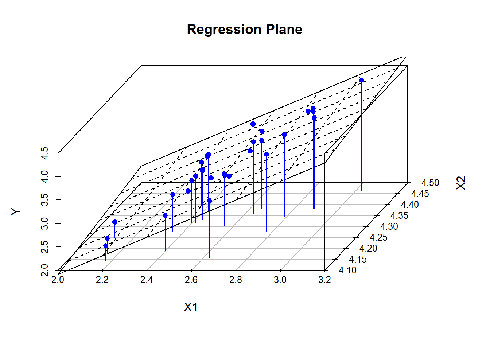